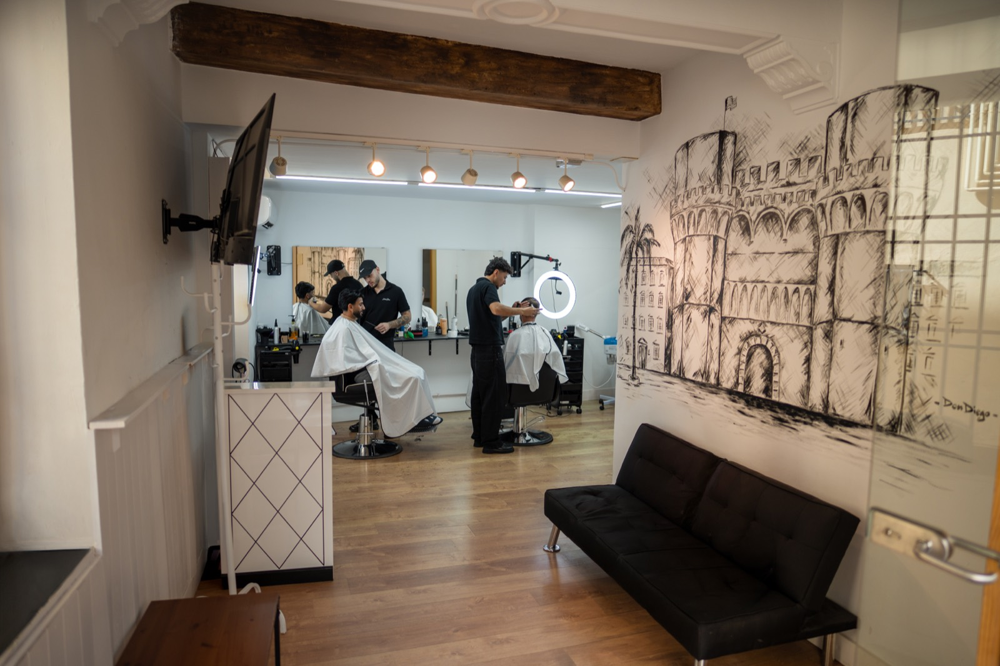

Blog
The Turia river in Valencia: a walk and a barbershop nearby, in La Petxina or El Carmen

The Turia no longer runs through the centre of Valencia. After the 1957 flood the river was diverted south and the old bed became the Jardí del Túria: a linear park of about nine kilometres, from Parque de Cabecera to the City of Arts and Sciences. People walk it, cycle it and cross from one neighborhood to another without leaving the green.
Barber Shop Valencia sits on the two stretches of that walk people use most. La Petxina is right beside the gardens, in Extramurs. El Carmen meets the same riverbed on its north side, by the Torres de Serranos. Both shops are a short walk from the river.
La Petxina, next to the old riverbed
La Petxina is a neighborhood in Extramurs, between Gran Vía and the former river. The barbershop is at C/ Juan Llorens 18. Step outside and the Jardí del Túria is a walk away: toward Viveros, the Museu de Belles Arts or, if you follow the park, the Palau de la Música.
It fits if you enter the gardens from Extramurs, from El Botànic or from home in the barrio. Book, get the cut and go back to the riverbed. More on the neighborhood is in this La Petxina article.
El Carmen, between the old town and the river
El Carmen is the north of Ciutat Vella. The Jardí del Túria closes it on the upper side, with the Torres de Serranos facing the park. The barbershop is at C/ Baja 50, inside the neighborhood. From there you can walk to the towers, Puente de la Trinidad and Pont de Fusta.
It fits if the walk is through the historic centre, if you are coming down from the towers, or if you want the cut in El Carmen and then the riverbed.
What to do on the Turia, and where to get the cut
- Walk or cycle the old bed. The park is flat and continuous. It works before the appointment or after it.
- Viveros and the Museu de Belles Arts. Then La Petxina, on Juan Llorens 18.
- Torres de Serranos, Puente de la Trinidad and the streets of El Carmen. Then El Carmen, on Calle Baja 50.
- Palau de la Música. It stands in the gardens themselves, between the two areas.
- Gulliver and the City of Arts. That stretch, to the east, is already far from both shops. Get the cut before you go that far, or on the way back.
How to pick a shop
If you enter the park from Extramurs, Campanar or Viveros, book La Petxina. If you are coming from the Torres de Serranos, Pont de Fusta or the streets of El Carmen, book El Carmen. Hours are the same in both: Monday to Friday 10:00–20:00 and Saturday 10:00–18:00.
The menu is on services. Each shop has its own page: La Petxina and El Carmen.
The cut and the river in the same plan
Book before you head out to walk, or on the way back from the park. The slot is held and the Turia is still there, a short walk from the chair.
Book beside the Turia
Pick the shop that sits on your walk. La Petxina at C/ Juan Llorens 18 or El Carmen at C/ Baja 50. Booksy or WhatsApp.